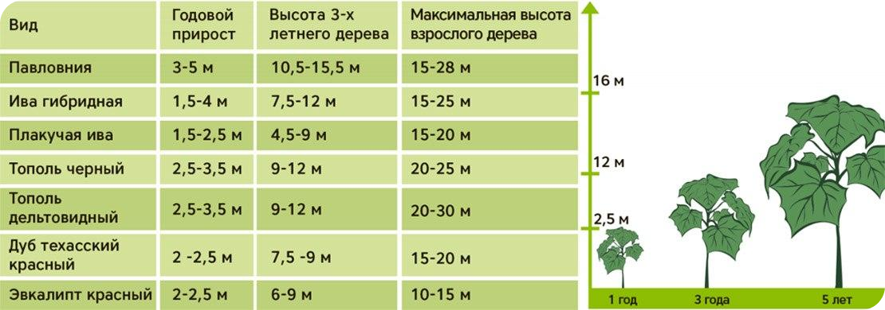

PAULOWNIA PROFESSIONAL®
о павловнииНЕМНОГО ИСТОРИИ
Павловния – уникальный вид быстрорастущих деревьев, не имеющих аналогов в мире. На страницах сайта вы сможете узнать обо всем, что касается культуры Павловния, а также приобрести нашу продукцию.
Дерево родом из Китая. Самые ранние документы и летописи, упоминающие об использовании этого чудесного дерева, датируются ранее 2600 лет н.э. Веками дерево росло в Японии. И было известно под названием Кири(Kiri), что в переводе с японского означает “жизнь”. Кири всегда считалось священным деревом и символом удачи. По традиции при рождении дочери в семье, садили дерево павловнии. Когда девушка выходила замуж, дерево срезали и из него изготавливали ее свадебный сундук. Кроме этого существовало такое поверье, что если посадить павловнию недалеко от дома, то птица феникс прилетит и принесет счастье.
В Японии павловния используется с 200 года н.э. и представляет собой национальную ценность. Японцы, которые очень любят как эстетику, так и символику, выбрали именно павловнию в качестве эмблемы в кабинете министра (рис.1)
Едва ли существует более явный способ подчеркнуть национальное значение павловнии для японского народа, чем ее присутствие на Ордене Восходящего солнца(рис.2). Это первый орден Японии учрежден в 1875г., которым награждают личностей, за заслуги перед страной, самого высокого ранга — адмиралов, генералов, дипломатов, юристов и политиков.
Также павловния изображена на японской монете стоимостью в 500 иен (рис.3).
В 1823 году Японию посетил Филипп Франц фон Зибольд- немецкий естествоиспытатель. Проведя некоторое время в Японии, он возвратился в Голландию и привез с собой семена красавицы Кири(Kiri). Как назвать это новое красивое растение? Конечно же, в честь любимой королевы-Нидерландов, урожденной Романовой, шестой дочери Павла Первого и императрицы Марии Федоровны. Именовать род растения “Анна” было нельзя, поскольку такой уже существовал, и тогда было решено использовать для названия отчество Анны, которое, по-европейски, было принято за второе имя – «Павловния».
Анна Павловна помогла немецкому естествоиспытателю финансировать экспедицию в Юго- Восточную Азию. Впоследствии, вместе с Йозефом Цуккарини он издал книгу Flora Japónica, где впервые были описаны свойства и качества дерева. Японцам понравилось европейское название, и они стали тоже называть это красивое дерево – Павловнией.
В Китае павловнию выращивают на площади 2,5 млн. гектаров из которых на 1,3млн. гектаров выращивание происходит комбинированным способом. В междурядьях высаживаются такие культуры как хлопок, кукуруза, чай и др.
Возможно вы встречали это прекрасное дерево с его огромными листьями и изящными, благоухающими цветками в городском сквере? Но никогда бы не подумали, что эта красавица приносит не только эстетическое удовольствие, но и имеет много полезных качеств и свойств.
ОБЩАЯ ХАРАКТЕРИСТИКА
Павловния (лат. Paulоwnia), или Адамово дерево или Дерево жизни (Japan. Kiri) — род растений семейства Павловниевые (Paulowniaceae), содержит более 20 видов, у которых имеются сходные качества и поэтому их именуют собирательным названием Павловния (Paulownia): P. australis, P. catalpifolia, P. coreana, P. duclouxii, P. elongate, P. fargesii, P. fortune, P. glabrata, P. grandifolia, P. imperialis, P. kawakamii, P. lilacina, P. longifolia, P. meridionalis, P. Mikado, P. recurva, P. rehderiana, P. shensiensis, P. silvestrii, P. taiwaniana, P. thyrsoidea, P. tomentosa, P. viscose.
Павловния – дерево с красивыми крупными листьями (диаметр около 70 см), цветами (до 6 см в диаметре) и красивой кроной. Диаметр ствола достигает 1 метр. В зависимости от среды произрастания, деревья могут достигать разной высоты, максимум до 30 метров. К почве неприхотлива, растёт на любых, даже на сухих почвах, содержащих до 2% извести, но наилучшего развития достигает на глубокой, умеренно влажной, дренажированной, достаточно плодородной, глинистой почве. Светолюбивая, предпочитает открытые хорошо освещённые участки. Может формироваться в виде большого многоствольного кустарника.
Темпы роста: Наиболее интенсивный рост у дерева Павловния наблюдается первые годы жизни. С возрастом (начиная с 5-ого года) прирост замедляется, а диаметр ствола увеличивается на 1см. ежегодно. Ширина и форма кроны: 3-6 метров, раскидистая, широко округлая.
Сравнение быстрорастущих деревьев
Регенерация дерева
Уникальность Павловнии заключается в том, что дерево не требует повторной посадки. После каждой вырубки, скоса, дерево регенерирует. Продолжительность жизни корня 70- 100 лет и может вынести между 4 и 8-9 циклов по восемь лет, что дает нам возможность возобновить наш рабочий процесс без затрат на новые посадки и обработку земель! Ствол можно срубить в любое время года несмотря на сезон и короткие сроки уборки, чего не бывает у других видов деревьев.


Листва: Особенности растения- в первый год жизни у дерева крупные волокнистые листья, которые в диаметре могут достигать 50-85 см. Сердцевидной или яйцевидной формы, с круглыми краями, ярко-зелёные, сверху пушистые, снизу войлочные. Цвет осенней листвы: не изменяется, опадают зелёными, затем становятся коричневыми.
Цветение: Приходится на весну и продолжается в течении 6-8 недель, что делает дерево Павловния идеальным материалом для озеленения городов, парковых территорий. Цветки крупные, окраска голубовато-фиолетовая, сиреневая или почти белая. Собраны цветки в крупные верхушечные метелки.
Корневая система: Стержневая(якорная). Корень достигает глубины 4,5-9м.
Кора: Тонкопластинчатая, светло-серая, гладкая, с легкими трещинами на взрослых деревьях.
Диаметр ствола: окружность 1,5-2-летнего дерева- 8-14см, 3-4-летнего-20-24см, взрослого 18-летнего – до 80см.
Плоды: Длинные, крючковатые древесные капсулы размером до 10мм. Семена: Бабочка-образные, 2-7мм длинной, перепончатые, крылатые.
Вредители: Древесина Павловнии накапливает вещество танин, которое делает ее устойчивой к поеданию термитами и жуками-точильщиками. Хорошо чувствует себя в городских условиях.
Засуха и жара устойчивость: Требует регулярного полива только первые два года, расход воды на один саженец 30-40л, внесенные за 1-2 раза в неделю. После развития корневой системы (3-й год) потребности в специальном поливе отпадают.
Павловния является приспосабливающимся к местности, устойчивым к погодным условиям деревом, регенерирует и восстанавливает почву, очень декоративное и красивое, неагрессивное к окружающей среде насаждение, а также фабрикой кислорода и оружием против глобального потепления, производителем целлюлозы, кормов и отличный медонос – при этом быстро растет и набирает массу. Могучесть и красота, древесина, листья, цветки у всех есть свойства и качества, которыми мы можем воспользоваться!!!
Ультрарост Прирост размером в 1куб.м за 7-8 лет несравним с приростом любого другого древесного вида. Растение в целом со своим ускоренным ростом является маленьким богатством для человечества: оздоровляет и восстанавливает почвы от эрозии, одно дерево поглощает 22кг СО2 и отдает 6кг кислорода, вдумайтесь в эти цифры. Неприхотливость: Подготовленные, качественные саженцы дерева Павловния, с укрепленной корневой системой, способны расти на малоплодородных почвах, в том числена глинистых и н Озеленение Огромные листья и большая крона предоставляют густую, плотную тень в местах отдыха, парка и скверах, образуя приятные прохладные уголки в самом центре загазованных и душных городов. Если существует дерево, о котором можно сказать «легкие города», это Павловния. Фураж для скота Листья – лиственная масса из Павловнии часто используется для откормки крупно рогатого скота (коровы, овцы, козы и др.) ЕЕ качества близки с качествами люцерны. Она содержит около 20% протеинов в зеленом состоянии и около 12% после осеннего листопада. Насыщена микроэлементами, ее усвояемость 60%. Наибольший процент содержания протеина находится в молодых однолетних растениях. Поэтому, если основная цель – это получение питательной биомассы из Павловнии для откорма крупно рогатого скота, целесообразно создавать отдельную плантацию и собирать качественный урожай в конце летнего периода. Технологии плантационного выращивания быстрорастущих деревьев Павловния для производства растительной биомассы за 1 год на площади 1 Га позволят получать 35-40 тонн качественного растительного сырья. Доступность и высокий выход обеспечивают низкую себестоимость при откормке – один из важнейших показателей при выборе фуража в индустриальном животноводстве.БИОТОПЛИВО, БИОГАЗ, БИОЭТАНОЛ
При постоянно растущем потреблении биотоплива, уже в ближайшее время, странам Центральной Европы не будет хватать своих лесных ресурсов, поэтому Германия, Голландия, Великобритания и Испания планируют значительно увеличивать импорт пеллетов. Сегодня, когда технический прогресс измеряется степенью защиты природы, все больше внимания стали уделять биотопливу из возобновляемых, высокопроизводительных энергетических культур. Использование павловнии в виде энергетического сырья – павловния используется кроме как в индустрии, еще и в энергетике в виде пеллетов (твердое топливо для котлов и каминов с полностью автоматизированной подачей топлива), а также в виде сырья для альтернативного восстановленного биотоплива. Для этих целей используются все части дерева: ствол, ветки и листья. Пеллеты можно использовать как для котлов обогревающие частные дома и квартиры, так и для больших установок и электросетей. Биогаз – это новый источник возобновляемой энергии, экологически чистый и экономически целесообразный. Это газ состоящий, в основном из метана (СН4), диоксида углерода (СО2) и в небольших количествах других газов. Возникает при ферментации органических веществ в анаэробных условиях (в отсутствие кислорода). Биогазовые установки – это установки, где происходит ускоренная форма естественного цикла разложения.
Использование древесины павловнии
Павловния является приспосабливающимся к местности, устойчивым к погодным условиям деревом, регенерирует и восстанавливает почву, очень декоративное и красивое, неагрессивное к окружающей среде насаждение, а также фабрикой кислорода и оружием против глобального потепления, производителем целлюлозы, кормов и отличный медонос – при этом быстро растет и набирает массу. Могучесть и красота, древесина, листья, цветки у всех есть свойства и качества, которыми мы можем воспользоваться!!!
Ультрарост Прирост размером в 1куб.м за 7-8 лет несравним с приростом любого другого древесного вида. Растение в целом со своим ускоренным ростом является маленьким богатством для человечества: оздоровляет и восстанавливает почвы от эрозии, одно дерево поглощает 22кг СО2 и отдает 6кг кислорода, вдумайтесь в эти цифры. Неприхотливость: Подготовленные, качественные саженцы дерева Павловния, с укрепленной корневой системой, способны расти на малоплодородных почвах, в том числена глинистых и н Озеленение Огромные листья и большая крона предоставляют густую, плотную тень в местах отдыха, парка и скверах, образуя приятные прохладные уголки в самом центре загазованных и душных городов. Если существует дерево, о котором можно сказать «легкие города», это Павловния. Фураж для скота Листья – лиственная масса из Павловнии часто используется для откормки крупно рогатого скота (коровы, овцы, козы и др.) ЕЕ качества близки с качествами люцерны. Она содержит около 20% протеинов в зеленом состоянии и около 12% после осеннего листопада. Насыщена микроэлементами, ее усвояемость 60%. Наибольший процент содержания протеина находится в молодых однолетних растениях. Поэтому, если основная цель – это получение питательной биомассы из Павловнии для откорма крупно рогатого скота, целесообразно создавать отдельную плантацию и собирать качественный урожай в конце летнего периода. Технологии плантационного выращивания быстрорастущих деревьев Павловния для производства растительной биомассы за 1 год на площади 1 Га позволят получать 35-40 тонн качественного растительного сырья. Доступность и высокий выход обеспечивают низкую себестоимость при откормке – один из важнейших показателей при выборе фуража в индустриальном животноводстве.График работы:
Пн-Пт: 9:00-18:00 +34 642 787 555 info@paulownia.pro